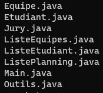

Comparaison algorithmes
Situation
Une SAE basé sur le comparaison d'algorithme qui c'est passé en deux temps : travail en équipe, et évaluation personnelles.
Durant la phase de travail d'équipe, on a commencer par comparer différents type de trie (trie à bulle, trie par séléction,
trie par insertion) sur différent type de tableau.


Différentes situations, mais même départ
Dans cette SAE, il était important de tester les trie dans différentes situations : en effet, un trie peut s'avérer très efficace
dans une situation précis, mais dans un autre cas ce trie sera totalement lent.
L'idée dans cette SAE était donc de tester les différents types de tries dans différentes situation, tout en s'assurant que ces test
se fassent dans la même situation. Ici, la difficultés était donc de tester ca.

Traitement des données
La lecture et enregistrement des données une fois fait, il était maintenant temps de les traités. Cette partie à était possible
grace à la réalisation de multiple classe java : un total de 8 classes.

Ces classes nous ont permis de former des groupes, de les placer dans des salles et de les faire passer avec un jury donnée.
Cette générations de groupes, jury, etc... dépends des données du data : les jurys peuvent être différents, ainsi que leur crénaux de passage
la durée de leur oraux, de leur temps de pause, des salles disponible etc...
Affichage des données
Parmis ces 8 classes, 3 d'entre eux sont réservès pour la génération des résultats afin de communiquer plus facilement nos données
à l'utilisateur (ce sont les classes qui commences par list).
Ces informations génèrent des pages Web que doit manuellement lancer l'utilisateur. Cette SAE a été retravailler légérement durant la
SAE 2.03 afin de faire en sorte que l'utilisateur puisse directement visualiser ses données sur un navigateur internet.
Les pages ne paient pas de mine, mais il est important de garder en tête que cela est un vieux projets datant de l'année dernière.


Pour voir le code en entier, n'hésitez pas à aller sur répértoire git SAE 1.01 .